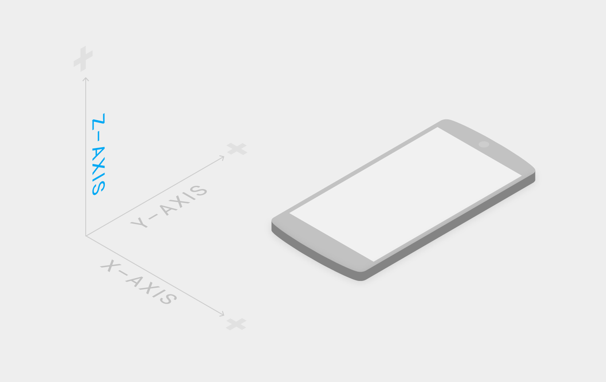

空间
质感设计的虚拟世界是一个三维空间，这意味着其中每个物体都有 X、Y、Z 三个三维坐标属性，表示海拔高度的 Z 轴垂直于显示屏，以屏幕正面朝向方向为正方向，由 Material 所组成的层面都在空间中占据一定的位置。

具备长、宽、高的三维空间。
为了使内容可见，虚拟世界需要光的介入。虚拟光源发出的光线被 Material 组成的层面所阻挡，投下阴影，而层面的空间关系也进一步地表现了出来。
从虚拟光影发出的直射光投射出定向的阴影，从空间边界平面反射的环境光投射出广泛、柔和的阴影。界面中的阴影由这两种阴影合成。
直射光投射出的阴影。
环境光投射出的阴影。
直射光与环境光共同投射出的阴影。